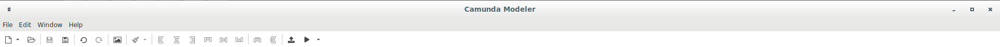

<div id="modeler">
  <iframe class="embeddedVariant" src="./no-border"></iframe>
</div>


<select class="version-select" type="select">
  <option value="noBorder">No Border</option>
  <option value="fixedBorder">Fixed Border</option>
  <option value="resizableBorder">Resizable Border</option>
</select>

<style>
  iframe {
    border: 0;
    width: calc(100% - 510px);
    height: calc(100% - 100px);
    overflow: hidden;
  }

  #modeler {
    display: inline;
    vertical-align: top;
  }

  body {
    overflow: hidden;
    margin: 0;
  }

  .version-select {
    position: absolute;
    bottom: 20;
    left: 20;
  }

</style>

<script>
  let iframe = document.querySelector('.embeddedVariant');
  document.querySelector('.version-select').addEventListener('change', function() {
    switch (this.value) {
      case 'noBorder':
        iframe.src = './no-border'
        break;
    
      case 'fixedBorder':
        iframe.src = './fixed-border'
        break;

      case 'resizableBorder':
        iframe.src = './resizable-border'
        break;

      default:
        break;
    }
  })
</script>